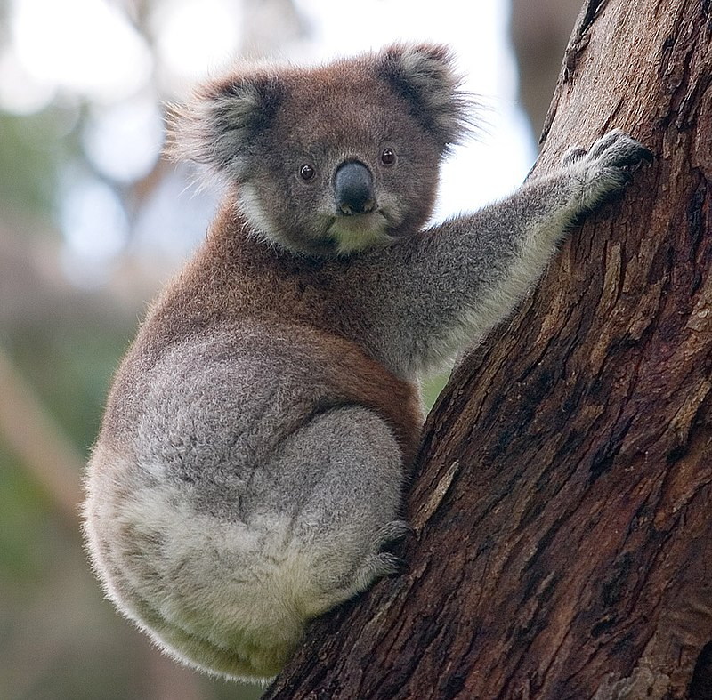
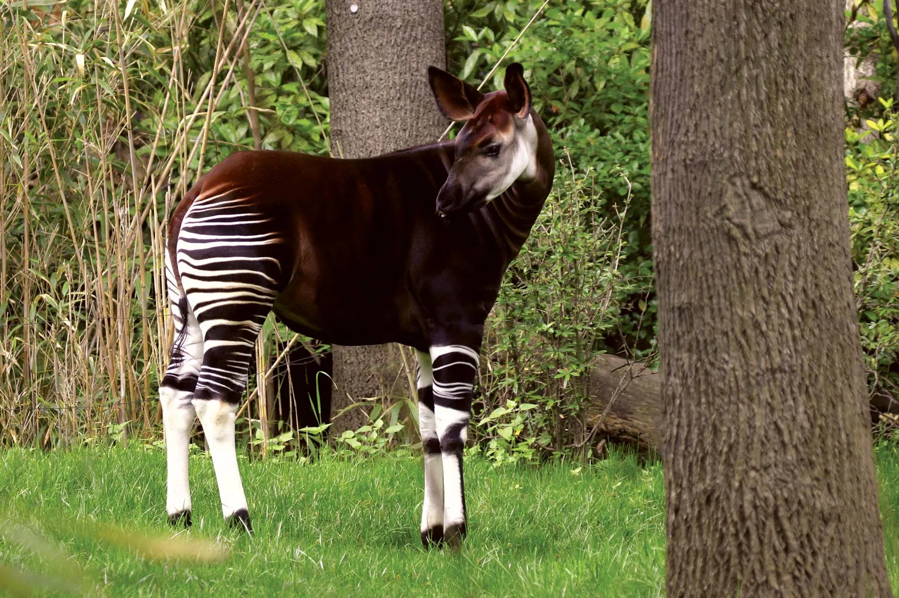
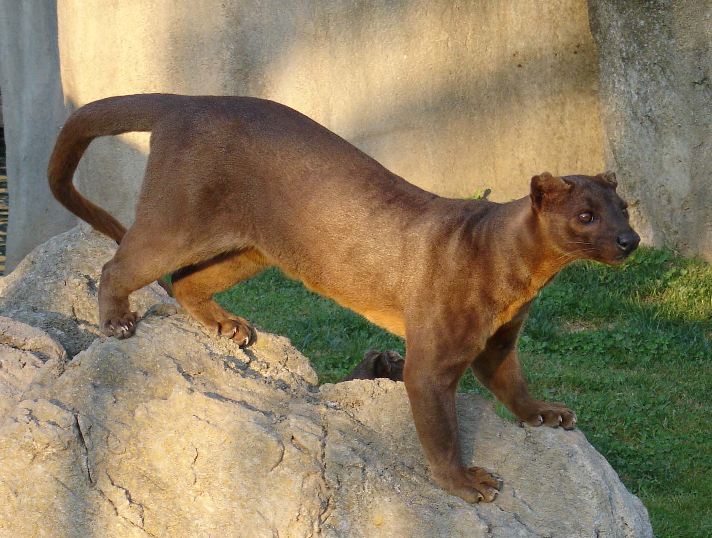

This Article is About Animals
In this Article we have discussed about 5 Unique Animals, Which are mentioned below ↓
Markhor
The Markhor is a large Capra (goat) species native to South Asia and Central Asia, mainly within
Pakistan,
the Karakoram range, parts of Afghanistan, and the Himalayas. It is listed on the IUCN Red List as Near
Threatened since 2015. The markhor is the national animal of Pakistan, where it is also known (in
English)
as the "screw-horn" or screw-horned goat. The word markhor, meaning "snake-eater", comes from both Urdu
and
classical Persian languages, referencing the ancient belief that the markhor would actively kill and
consume
snakes. This regional myth is believed to stem from the "snake-like" form of the male markhor's horns,
twisting and curling like a snake, possibly leading ancient peoples to associate them with snakes.

Red Panda
The Red Panda, also known as the lesser panda, is a small mammal native to the eastern Himalayas and
southwestern China. It has dense reddish-brown fur with a black belly and legs, white-lined ears, a
mostly
white muzzle and a ringed tail.It is well adapted to climbing due to its flexible joints and curved
semi-retractile claws.The red panda was first formally described in 1825. The two currently recognised
subspecies, the Himalayan and the Chinese red panda, genetically diverged about 250,000 years ago. The
red
panda's place on the evolutionary tree has been debated, but modern genetic evidence places it in close
affinity with raccoons, weasels, and skunks. It is not closely related to the giant panda, which is a
bear,
though both possess elongated wrist bones or "false thumbs" used for grasping bamboo. The evolutionary
lineage of the red panda stretches back around 25 to 18 million years ago, as indicated by extinct
fossil
relatives found in Eurasia and North America.

Koala
The Koala, sometimes called koala bear, is an arboreal herbivorous marsupial native to Australia. It is the
only extant representative of the family Phascolarctidae and its closest living relatives are the wombats.
The koala is found in coastal areas of the mainland's eastern and southern regions, inhabiting Queensland,
New South Wales, Victoria, and South Australia. It is easily recognisable by its stout, tailless body and
large head with round, fluffy ears and large, spoon-shaped nose.Fur colour ranges from silver grey to
chocolate brown. Koalas from the northern populations are typically smaller and lighter in colour than their
counterparts further south. These populations possibly are separate subspecies, but this is disputed


Okapi
The Okapi, also known as the forest giraffe, Congolese giraffe and zebra giraffe, is an artiodactyl mammal
that is endemic to the northeast Democratic Republic of the Congo in central Africa. It is the only species
in the genus Okapia. Although the okapi has striped markings reminiscent of zebras, it is most closely
related to the giraffe. The okapi and the giraffe are the only living members of the family Giraffidae. Its
coat is a chocolate to reddish brown, much in contrast with the white horizontal stripes and rings on the
legs, and white ankles. Male okapis have short, distinct horn-like protuberances on their heads called
ossicones. Females possess hair whorls, and ossicones are absent.

Fossa
The Fossa is a slender, long-tailed, cat-like mammal that is endemic to Madagascar. It is a member of the
carnivoran family Eupleridae. The fossa is the largest mammalian carnivore on Madagascar and has been
compared to a small cougar, as it has convergently evolved many cat-like features. It has semi-retractable
claws (meaning it can extend but not retract its claws fully) and flexible ankles that allow it to climb up
and down trees head-first, and also support jumping from tree to tree. A larger relative of the species,
Cryptoprocta spelea, probably became extinct before 1400.
